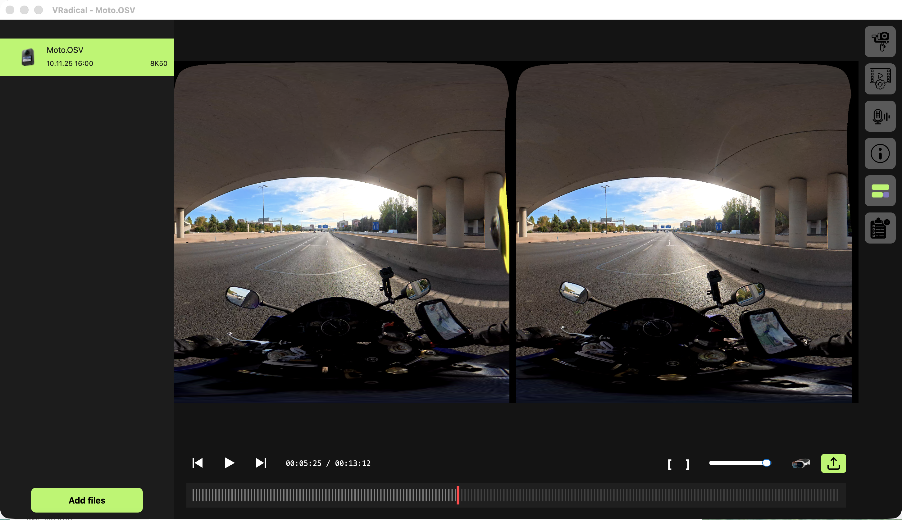
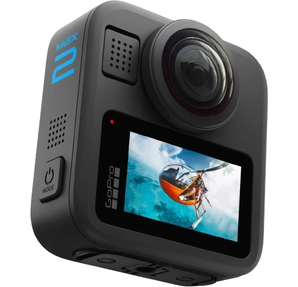
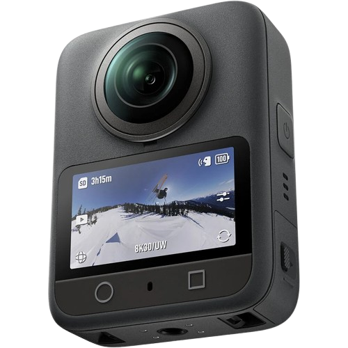
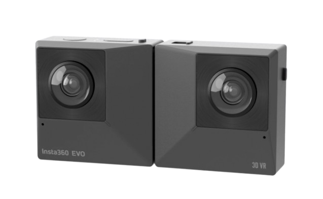
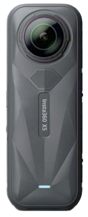
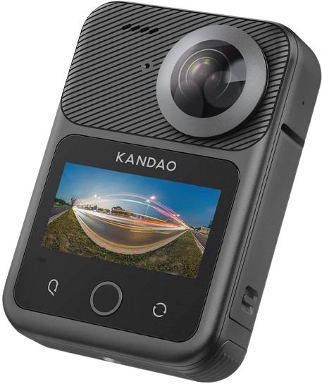
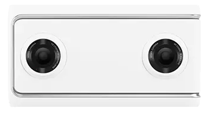
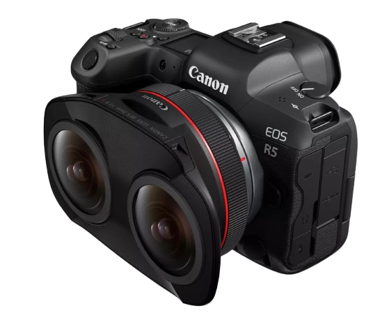
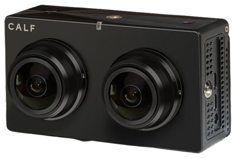

VRadical Studio is a desktop application for macOS and Windows that imports, calibrates, stabilizes, edits, exports, and publishes immersive VR videos and photos.
Version 1.0.0macOS + WindowsGPU-firstEnglish edition


GoPro

DJI

Insta360 EVO

Insta360 X5

Kandao Q3U

Lenovo Mirage

Canon EOS R5 Mark II

CALF Gen 1
16organized chapters
14real product captures
2desktop platforms
1shared workflow
01
From camera file to polished VR180
Start here
Welcome to VRadical Studio. This guide is your friendly, practical map of the whole app: importing camera media, calibrating stereo geometry, stabilizing motion, shaping the look, editing a mixed-camera timeline, exporting, and streaming to DeoVR.
Preview
Open supported camera originals and inspect the final side-by-side VR180 image on the GPU.
Polish
Calibrate, stabilize, grade color, correct framing, process audio, denoise, and sharpen.
Build
Combine compatible videos, photos, and external audio in a reusable Timeline project.
Deliver
Export modern video and photo formats, publish after export, or stream locally to DeoVR.
SCREENThe welcome screen. Drop supported media anywhere in the center, or choose Open Files.
Your first ten minutes
1
Launch Studio
Open the application and confirm that it reaches the import screen without a GPU warning.
2
Add media
Drop one or more supported camera files, or choose Open Files. Keep every required companion or segment file beside the selected file.
3
Complete calibration
If Studio asks for stereo calibration or sensor orientation, finish that guided flow before judging the final picture.
4
Choose the motion
Open Stabilization, enable VRadical Flow when needed, then add Lock Vertical Direction and/or Chicken Head Stabilization as intentional modifiers.
5
Shape the image
Open Media Processing for color, LUT, image correction, and camera-specific geometry controls.
6
Set a range
Use the left and right bracket controls to mark In and Out points when you only need part of a video.
7
Deliver
Choose Export, build a Timeline, or start a DeoVR stream. Studio keeps the camera pipeline attached to every clip.
A tiny glossary before we roll
Term
What it means in Studio
Camera pipeline
The named parser, preview, stabilization, calibration, export, Timeline, and streaming route for one camera profile.
SBS / VR180
A side-by-side stereo frame: the final left eye on the left half and final right eye on the right half.
Hequirect
Studio's half-equirectangular VR180 projection. It is the usual final SBS view.
Calibration
A persistent camera-specific stereo correction that aligns parallax and must be applied as the final geometry step.
Mod profile
Saved per-camera setup such as sensor rotations, eye order, and focal-distance defaults.
Timeline
A .vradical-timeline project containing explicit video/photo clips, external audio, trims, transitions, and per-clip processing.
02
A GPU is not optional here
Install and launch
VRadical Studio is GPU-first. Preview, geometry, stabilization, calibration application, color, LUTs, Timeline playback, and display stay on the native GPU path. Unsupported hardware stops at launch instead of silently reducing quality.
Platform
Required hardware
Install location
macOS
Apple Silicon Mac. Intel Macs are not supported.
/Applications/VRadical Studio.app
Windows
Hardware Direct3D 11 GPU. Non-Apple PCs require NVIDIA or AMD; a physical Apple computer running Windows may use its installed hardware GPU.
C:\Program Files\VRadical Studio
Install on macOS
1
Open the DMG
Use the VRadical Studio disk image supplied for your edition.
2
Copy the app
Drag VRadical Studio into Applications. Keep the application bundle intact because it contains the GUI, CLI, libraries, and calibration tools.
3
Launch
Open VRadical Studio from Applications. If macOS asks for confirmation, verify that you are opening the delivery you received.
4
Upgrade
In an updater-enabled customer build, choose Help > Check for Updates or open Settings > General > Updates. A manually delivered build can still be replaced while Studio is closed.
Install on Windows
1
Run the installer
Open VRadicalStudioSetup.exe. Windows may show an unknown-publisher UAC prompt for the current unsigned installer.
2
Choose the destination
The default is Program Files. The installer can create Start menu and desktop shortcuts.
3
Finish prerequisites
Allow the installer to add the Microsoft Visual C++ x64 runtime when needed.
4
Upgrade
Use Help > Check for Updates in an updater-enabled customer build, or quit Studio and run a newer installer over the existing installation.
First-launch checks
CHECKThe import screen appears and remains responsive.
CHECKNo Apple Silicon or Direct3D 11 compatibility message appears.
CHECKThe version shown in Settings matches the delivery notes.
CHECKYour camera family is enabled in this edition. Camera support is build-specific.
CHECKThere is enough fast local storage for camera originals, exports, and temporary calibration data.
03
Explicit support, never a generic guess
Cameras and media
An extension is only the first gate. Studio also verifies camera metadata, the installed camera family, and complete support for the operation you requested. That strictness keeps preview and export honest.
Accepted containers
Family
Video
Photo
Important notes
GoPro
.360
.36p
MAX2 BERS1, BERS0, and Fisheye are distinct profiles. Timeline availability varies on older profiles.
DJI Osmo 360
.osv
.jpg
A multipart recording may span sibling OSV files. Keep every original member together.
Insta360
.insv
.insp, .dng
Supported profiles include EVO, X4/X5 video, Insta360 INSP/DNG photos, and One R/RS variants. Split recordings need matching parts.
Kandao Q3U
.mp4, .mov
.jpg, .dng
MP4/MOV support is metadata-validated. Q3U video support currently targets 24/25/30 fps families.
Lenovo Mirage
.mp4, .mov
.jpg
Video and Extended-XMP photo routes require the matching explicit profile.
Canon EOS VR System
.crm
.jpg, .cr3
Canon EOS R5 Mark II with RF 5.2mm F2.8 L Dual Fisheye only. .jpeg is not an accepted alias.
CALF Gen 1
V#######.mp4
-
Optional camera slice. Availability depends on the purchased edition.
Timeline
.vradical-timeline
-
A project references its original media; it is not a generic JSON file.
Video profile coverage
Profile
Preview
Export
Timeline
DeoVR
Calibration
GoPro MAX2 BERS1 EAC
Yes
Yes
Yes
Yes
Required
GoPro MAX Fisheye
Yes
Yes
Yes
Yes
Required
GoPro BERS0 / older EAC
Yes
Yes
Yes
Yes
Required
DJI Osmo 360 dual-fisheye
Yes
Yes
Yes
Yes
Required
Insta360 EVO, X4, X5
Yes
Yes
Yes
Yes
Required
Insta360 One R/RS 1-inch H/V
Yes
Yes
Yes
Yes
Required
Kandao Q3U
Yes
Yes
Yes
Yes
Required
Lenovo Mirage
Yes
Yes
Yes
Yes
Required
Canon EOS R5 Mark II CRM
Yes
Yes
Yes
Yes
Required
CALF Gen 1
Yes
Yes
Yes
Yes
Required
Photo profile coverage
Photo route
Preview/export
Calibration behavior
GoPro MAX2 .36P
JPG export and Timeline
Uses same-serial video calibration when present; otherwise opens with transient photo alignment after a warning.
DJI Osmo 360 JPG
JPG export and Timeline
Requires a compatible Osmo video calibration. A chooser maps a different photo serial to an existing video calibration.
Insta360 INSP/DNG
JPG, eligible DNG, and Timeline
Requires matching same-camera-serial video calibration.
Kandao Q3U JPG/DNG
JPG, eligible DNG, and Timeline
Requires a compatible Q3U video calibration; a chooser may be offered.
Lenovo Mirage JPG
JPG export and Timeline
Requires matching same-serial video calibration.
Canon EOS R5 Mark II JPG/CR3
JPG, processed DNG from CR3, and Timeline
Uses a transient single-frame photo correction; it does not require or create persistent video calibration.
Canon CRM first-use workflow
1
Open the original CRM
Studio opens a neutral native GPU preview before full visual motion analysis, so you can inspect and calibrate the source immediately.
2
Confirm the Canon recipe
Studio requires the official Canon recipe LUT from the normally installed Canon resource. It never substitutes a guessed look.
3
Calibrate video geometry
Complete Auto-Calibration for the matching EOS R5 Mark II and lens before final preview, export, Timeline, or streaming.
4
Enable stabilization when needed
Studio generates and caches the visual trajectory on demand. The progress panel can be cancelled cleanly.
5
Monitor audio
CRM exposes four 48 kHz, 24-bit mono channels. Monitoring defaults to channels 1 and 2.
Companion-file rules
DJI multipart
Keep all sibling OSV members. Studio validates identity, order, stream compatibility, duration, and logical revision as one inseparable recording.
Insta360 split media
Keep matching _00_ and _10_ parts together. Missing or mismatched parts fail before rendering.
Timeline references
Do not move or replace source media after queuing. A changed logical source is rejected instead of silently rendering different content.
GoPro chaptered video
Keep every GS<FF><NNNN>.360 member together, beginning with GS01. Multi-member GS02+ playback remains fail-closed until genuine chaptered camera footage completes end-to-end validation.
Customer editions
A camera can be valid but absent from a particular build. Install the edition made for that camera family.
04
Everything you need, without a maze of panels
Workspace and import
The left column is your loaded-media shelf, the center is the native GPU preview, the bottom is transport and range control, and the right rail opens processing, information, Timeline, and queue views.
SCREENThe standard video workspace with a calibrated DJI Osmo 360 ride loaded at 8K50.
Import one or many files
1
Choose media
Use File > Open the files, the Open Files/Add files button, or drag supported files into the window.
2
Wait for the batch
Studio probes and validates the entire selection before it exposes the first active clip.
3
Read the summary
If some files are rejected, one summary lists every rejected name and reason. Accepted media arrives together.
4
Handle calibration
If the active import needs calibration, that flow starts only after loading and the rejection summary are finished.
Per-media session state
Every loaded medium keeps its own color, LUT and strength, anti-flicker, image correction, audio mode, and stabilization choices for the current session.
Switching media restores that medium's state; it never inherits the settings of the clip that was just visible.
Restored grade values remain exact, but the named color-profile selector returns to (None) because the session snapshot stores values rather than a live preset association.
Removing a medium forgets its session state. Remove All clears the whole session, and restarting Studio does not restore these creative settings.
Aliases of the same logical multipart recording share one state because Studio treats them as one inseparable medium.
A Timeline clip starts from the source medium's current snapshot, then becomes independently editable inside the project.
Transport controls
Control
Action
Previous Frame
Move back one source frame.
Play / Pause
Start or pause without intentionally dropping late source frames.
Next Frame
Move forward one source frame.
Timecode
Shows current time and clip/range duration.
[ In
Set the export/stream start at the current frame.
] Out
Set the export/stream end at the current frame.
Volume
Adjust monitoring volume. It does not replace the chosen audio-processing mode.
Stream
Open DeoVR streaming settings for a video or Timeline.
Export
Open Video Export Settings or Photo Export Settings for the active media.
Playback details that matter
Fractional rates such as 29.97 and 59.94 use a high-resolution schedule rather than an integer-millisecond timer.
When processing is late, Studio displays frames as soon as possible instead of skipping source frames to catch up.
At end of playback, the last rendered frame stays visible. Press Play to restart from the active range.
The preview remains centered when the window is resized.
Photos intentionally hide playback, audio, stabilization, streaming, and In/Out controls.
05
Perfect parallax is a saved camera asset
Calibration
Stereo calibration corrects the final relationship between both output eyes. Studio stores it by camera/profile and automatically reapplies it on future loads. When a profile requires calibration, missing or invalid data blocks final preview, export, streaming, and Timeline output.
SCREENThe 3D Parallax Calibration controls: Auto-Calibration, Backup, and Load.
Automatic calibration workflow
1
Load a calibration-capable video
Use a clear, textured scene with useful detail across both eyes and several moments through the clip.
2
Open Media Processing
Expand Calibration and choose Auto-Calibration. Confirm replacement if a usable calibration already exists.
3
Let Studio extract samples
The native GPU renders several final-output eye pairs. Do not move, rename, or disconnect the source during the run.
4
Let the solver finish
Studio prepares stereo matches, rejects weak samples, solves shared rectification and output translation, and validates the result.
5
Load automatically
The resulting camera/profile INI is saved and applied immediately. The same profile loads automatically next time.
Modified DJI sensor orientation
On first setup, Studio may determine cardinal sensor orientation before parallax calibration.
Automatic setup measures stabilization ON and OFF states, then saves one complete Mod profile.
If the scene is ambiguous, Studio does not guess. Use the calibration-purpose manual preview to capture both states, then retry calibration.
An existing Mod profile is authoritative, including an all-zero profile created elsewhere.
Photo calibration identity
Situation
What Studio does
Photo serial matches calibrated video
Loads the same-serial video calibration automatically.
DJI or Q3U photo serial differs
Shows a styled chooser containing compatible, usable video calibration serials.
Canon JPG or CR3
Runs a transient single-frame correction for that photo; no persistent video-calibration INI is required.
No compatible video calibration exists
Rejects the photo and asks you to load/calibrate a compatible video first.
Chooser is cancelled
Rejects the photo because camera identification is required.
Alias target was removed
Cleans the broken alias and offers the chooser again on the next preflight.
Calibration troubleshooting
Symptom
Best next move
Missing
Run Auto-Calibration with the matching camera video.
Invalid
Verify the camera/profile identity, then create a fresh solve. Do not reuse an unrelated INI.
Low-feature failure
Choose a scene with more texture, less motion blur, and clear overlap across both eyes.
Manual DJI setup requested
Capture both stabilization states. A one-state draft is intentionally not saved as authoritative.
Photo has no calibration
Load a compatible video first, calibrate it, then reopen the photo.
Canon CRM has no calibration
Run Auto-Calibration from the matching EOS R5 Mark II CRM; neutral preview may open first, but final video routes require calibration.
06
Choose how the viewer experiences the motion
Stabilization
Stabilization controls are camera-policy aware. Studio only shows controls that make sense for the active profile, while preview, export, streaming, and Timeline use the same prepared motion contract. VRadical Flow is the master switch; vertical lock and Chicken Head are optional modifiers.
Older GoPro BERS0/EAC profiles can expose Gyroscope and camera-specific rolling-shutter factor controls.
DJI Osmo 360 uses one rigid motion basis for both eyes and native metadata rolling shutter.
Insta360 EVO, X4, X5, One R/RS, and 1-inch profiles use dense FlowState motion, automatic metadata rolling shutter, and one shared trajectory for both eyes. Residual rolling-shutter sliders stay hidden.
On X4/X5 clips recorded with both sensors down, Studio can retry left +90/right -90 automatically when no authoritative Mod profile exists, then save the working orientation.
Kandao Q3U keeps its validated centered yaw/pitch path and accepts only 24, 25, or 30 fps families within a 0.5 fps tolerance. Chicken Head fixes initial yaw.
Canon CRM offers Off, VRadical/EOS VR Utility Flow, Lock Vertical Direction, and Chicken Head. It uses a 12.8 ms global gyro window and never exposes gyro-fusion or residual rolling-shutter controls.
Photos are static sources and do not expose stabilization controls.
07
Make it feel finished
Look, geometry, and audio
Media Processing is where the technical image becomes your image. Color and LUT work is camera-neutral, image correction changes framing and eye geometry, and audio modes flow into preview, Timeline, and export.
SCREENAudio Processing modes are simple on purpose and carry consistently into the delivery path.
Audio modes
Mode
Result
None
Leaves sample processing bypassed.
Focus Vocal
Prioritizes speech and reduces competing ambience when the audio DSP is available.
Noise Reduction
Reduces steady background noise while preserving a more general mix.
Mute
Outputs silence for the clip. This remains available even if advanced audio DSP is absent.
08
Full-resolution delivery, responsive GPU preview
Photo workflows
A photo is not treated as a one-frame video. Studio decodes it once, caches the active native GPU source, shows a bounded interactive preview, and keeps the requested or full resolution for export.
Open and finish a photo
1
Import the original
Open a supported .36p, .jpg, .cr3, .insp, or .dng whose camera family is enabled. Canon .jpeg is not an accepted alias.
2
Resolve geometry
Use matching video calibration or choose a compatible video serial when the DJI/Q3U route offers it. Canon photos use a transient single-frame correction instead.
3
Inspect both eyes
Check vertical alignment, scale, seams, and common visibility at the center and borders.
4
Frame the shot
Use Color Grading and supported image-correction controls. Photos do not expose audio or stabilization.
5
Export
Choose JPG final SBS/VR180, or DNG only when the source route and output contract support it.
Camera-specific photo behavior
Camera
What to expect
GoPro MAX2 .36P
A baked ERP photo with camera-specific yaw/split alignment and optional same-serial persistent video calibration.
DJI Osmo 360 JPG
Stitched ERP seam recovery, compatible-video serial selection when needed, then final persistent stereo calibration.
Insta360
Native INSP/DNG photo route with matching same-camera-serial calibration.
Kandao Q3U
Dual-fisheye JPG/DNG route with static gravity redress, shared lens orientation policy, and compatible video calibration.
Lenovo Mirage
Extended-XMP photo route with matching same-serial video calibration.
Canon EOS R5 Mark II
Exact 8192x5464 JPG/CR3 route for the RF 5.2mm lens. JPG can export JPG; CR3 can export JPG or a processed DNG.
Photos in a Timeline
A photo becomes a silent static visual clip with a default duration of 2 seconds.
Trim or stretch the block to change how long the same rendered frame remains on screen.
Photo clips support placement, transitions, color/LUT, and image correction.
Photo clips never expose audio or stabilization controls.
Timeline export renders the calibrated native still at the Timeline cadence for the block's duration.
09
One dialog, a lot of delivery power
Video export
Video export snapshots the active media state, validates the camera route and calibration, then queues a job that uses the same native GPU processing contract as preview. Only the encoder may use software when the requested hardware encoder is unavailable or deliberately disabled.
Mark the range in the player, or leave the full clip active.
2
Open Export
Choose the green export button at the lower right.
3
Name the file
Choose a destination and a meaningful filename. Studio adds a numeric suffix when the name already exists.
4
Choose the picture
Set resolution, projection, frame rate, codec, bit depth, denoise, and sharpening.
5
Confirm motion and metadata
Review stabilization, hardware acceleration, and VR metadata.
6
Start Export
The validated job enters the Export Queue. You can keep working while it runs.
Core export controls
Setting
Choices and guidance
Bitrate
10 to 300 Mbps in the GUI. 120 Mbps is a strong starting point for 8K HEVC; motion and texture may justify more.
Resolution
Width 640-15360 and height 320-7680. The projection and codec can narrow valid choices.
Projection
Hequirect, Fisheye, or square Rally when the active camera pipeline supports it.
Frame rate
Source rate or 24, 25, 29.97, 30, 50, 59.94, 60, 90, 100, or 120 fps.
Encoding
H.264, HEVC, AV1, ProRes Standard, ProRes HQ, plus macOS Vision Pro formats when available.
Color depth
8 or 10 bits when supported by the selected codec and route.
Denoise
Off, Old Style, or New Style.
Sharpening
None, Light, Medium, or Strong.
Hardware Acceleration
On by default. If unavailable, Studio can use software encoding while all image processing remains on the GPU.
VR Metadata
On by default for standard VR180 files. Disable only when another delivery system requires a plain file.
Codec and container guide
Codec
Container
Best for
Notes
H.264
MP4
Broad compatibility
8-bit oriented and less efficient than HEVC at very high VR resolutions.
HEVC
MP4
Modern VR delivery
Strong default for 6K/8K, with 10-bit support when available.
AV1
MP4
Efficient modern delivery
Encoder availability and speed depend on hardware and platform.
ProRes Standard
MOV
Editing masters
Large, robust intermediate for downstream post-production.
ProRes HQ
MOV
High-quality masters
Larger than ProRes Standard.
Spatial Vision Pro
MOV
Apple spatial presentation
macOS-only, 10-bit, and Hequirect.
Immersive Vision Pro
MOV
Apple immersive presentation
macOS-only, 10-bit, and Hequirect.
Built-in YouTube profiles
Profile
Exact built-in settings
Youtube 8K 8bit
8640x4320, 29.97 fps, 200 Mbps, HEVC, 8-bit, Hequirect, hardware acceleration ON, denoise Off, sharpening None, Flow ON, Lock Vertical ON, Chicken Head OFF, VR metadata ON, YouTube ON.
Youtube 8K 10bit
Same settings, with 10-bit color depth.
10
Single shots or a whole mixed delivery
Photo, batch, and queue
Photo export keeps the still-image route honest, while mixed batch export validates every selected medium before anything enters the queue. Each camera family and media kind gets the settings it actually supports.
SCREENMixed batch export keeps independent DJI Osmo and Insta360 video tabs, then queues both jobs atomically.
Photo export settings
Setting
Behavior
File name and path
Choose the output folder and final name. JPG is the normal delivery format.
Format
JPG final SBS/VR180, or DNG only for eligible DNG source routes.
Projection
Hequirect SBS/VR180 or Fisheye SBS when the photo pipeline supports it.
Resolution
Use the full/requested still resolution, independent of the bounded interactive preview.
Denoise / Sharpen
Choose an export-time image cleanup and sharpening level.
VR/photo metadata
Enabled for JPG when you want compatible viewers to identify the result.
Mixed batch export
1
Select several media items
Include supported videos and photos from one or more enabled camera families.
2
Choose Export
Studio groups the selection by camera family and media kind.
3
Review every tab
Each group keeps its original video or photo export controls. A fixed camera policy can override an incompatible tab choice.
4
Resolve names
Choose output names and let Studio avoid collisions with unique suffixes.
5
Validate the complete batch
Studio checks every photo/video job before queuing any of them.
6
Enqueue atomically
If validation succeeds, the full batch enters the queue and executes sequentially.
Export Queue
State
Meaning
Pending
Validated and waiting for earlier jobs.
Starting
Preparing the native route, decoder, processing snapshot, and encoder.
Exporting
Rendering with live percentage progress.
Completed
Delivery finished successfully.
Failed
The job stopped with a preserved error message and can be inspected or retried.
Cancelled
The user requested a clean stop.
Queue context actions
Export Settings - review the frozen job settings.
Show in Finder / Explorer - reveal a completed output.
Retry - rebuild a failed or cancelled attempt from its job contract.
Show Error - read the complete failure reason.
Remove from list - clear a finished entry without deleting its output.
Cancel export - request a clean stop for an active job.
Publish after export
Destination
Workflow
DeoVR
Connect an account, prepare title/description and destination options, then upload after export succeeds.
JillVR
Connect and configure the destination. Upload begins only after the local file completes.
YouTube
Choose title, description, category, privacy, schedule, thumbnail, subtitles, language, and applicable video options.
11
Mix cameras without flattening their identity
Timeline
Timeline mode gives you one visual track for supported video and photo clips plus one external audio track. Every visual clip keeps its named camera pipeline, calibration, and per-clip processing settings.
SCREENA mixed Insta360 X5 and DJI Osmo 360 Timeline with waveforms, playhead, trim ruler, and an orange transition at the camera boundary.
Build a project
1
Load source media
Import every video and photo you plan to use. Referenced media also loads when you open a Timeline project.
2
Enter Timeline
Choose the Timeline button on the right rail.
3
Add visual clips
Double-click or drag supported media into the visual track.
4
Add external audio
Use + Audio for WAV, MP3, M4A, AAC, or FLAC from the file picker.
5
Arrange and trim
Drag clips, adjust edges, split at the playhead, and remove unwanted blocks.
6
Polish each clip
Open clip-specific audio, color, image correction, or stabilization where supported.
7
Save
Write a .vradical-timeline project before export or streaming.
Editing operations
Operation
Behavior
Move
Reposition a selected visual or audio block on its track.
Trim
Drag a block edge to change source In/Out for video or displayed duration for a photo.
Split
Cut the selected video at the playhead with the toolbar or C/B shortcut.
Remove
Delete the selected block without deleting the original media.
Mute
Mute a selected video clip's embedded audio.
Zoom / Fit
Change Timeline scale or fit the project span into view.
Normalize audio
Analyze levels and apply a consistent Timeline listening target.
Track volume
Adjust external audio-track level independently.
Transitions
Track
Choices
Video
None, Fade to Black, Fade to White.
Audio
Fade, Crossfade, Keep as is.
Per-clip settings
Video clips can carry their own stabilization mode, audio mode, color/LUT grade, and image correction.
A new clip is initialized from its source medium's current session snapshot; later Timeline edits belong to that clip.
Photo clips carry color/LUT, image correction, placement, trim duration, and transitions, but no audio or stabilization.
Sensor rotations and Mod profiles are materialized per camera serial before a job is assembled.
A Timeline may mix clips from different registered camera profiles on the same visual track.
If a referenced logical multipart source changes, Studio fails closed and asks you to reload instead of rendering new physical members silently.
Save, reopen, export, and stream
Save projects with the .vradical-timeline extension.
Keep project media at stable paths, with companion and multipart files intact.
Opening a project imports referenced photos and videos into the left media list.
Timeline export uses the same camera route per clip and the selected global output cadence/codec.
Timeline DeoVR streaming uses the same local HLS workflow as a video clip.
Preview the frames around every cut and transition before a long master export.
12
A local headset-ready HLS stream
DeoVR streaming
Studio can stream a supported video or Timeline over your local network. It prepares hardware-encoded HEVC HLS, publishes a DeoVR entry point, and keeps temporary segments managed for the life of the session.
SCREENDeoVR setup on port 8080 with 6K output, VRadical Flow, and Lock Vertical Direction.
Start a stream
1
Load a video or Timeline
Photos cannot be streamed.
2
Set the range
Optional In and Out points define the streamed section.
3
Open Stream to DeoVR
Choose the headset button in the lower-right transport area.
4
Choose port and resolution
Port 8080 and 4K are the defaults. Available sizes are 4K, 5.7K, 6K, and 8K. Resolutions above 4K require a very powerful GPU.
5
Review stabilization
Use the same motion choices you previewed for the clip.
6
Start Streaming
Wait through Buffering until Studio reports Streaming and displays the URL.
7
Open DeoVR
On a reachable device, open http://<computer-ip>:<port>/deovr.
8
Stop when finished
Choose Stop Streaming so the server closes and temporary segments are removed.
Video format
HEVC HLS with hardware encoding and 2-second segments.
Ready threshold
Studio normally waits for three playable segments before publishing the stream.
Playlist
The media playlist is available at /stream.m3u8 behind the DeoVR entry point.
Temporary data
Managed in the system temporary folder under vradical_hls and cleaned before, after, and on failure.
Streaming fixes
Problem
Fix
Port already in use
Choose another port between 1024 and 65535.
Headset cannot connect
Confirm both devices share a reachable private network and allow the chosen port through the firewall.
Buffering never becomes Streaming
Check hardware encoder availability, free disk space for temporary segments, and the active export range.
URL uses the wrong interface
Use the computer's reachable LAN address with the chosen port and /deovr path.
Photo selected
Load a supported video or Timeline. Static photos do not expose streaming.
13
Keep recurring setup out of the way
Settings, updates, and profiles
The shared frameless Settings window exposes version information, language selection, trajectory-cache maintenance, authenticated updates in customer builds, and the per-camera Mod profile editor. Use profiles for physical rig setup, not as a substitute for a clip's creative grade.
SCREENThe Mod Settings editor with a clean profile list and separate stabilization ON/OFF sensor orientation.
Create or edit a Mod profile
1
Open Mod Settings
Open Settings, then choose Mod Settings.
2
Choose New or a profile
Create a profile or select an existing camera serial from the list.
3
Enter the exact serial
Camera serial is a semantic identity. Preserve all characters and boundary whitespace exactly as supplied by Studio.
4
Set both stabilization states
Choose left/right cardinal sensor rotations for Stabilization ON and OFF.
5
Set eye order and focal distance
Use Swap Left/Right Eyes and the profile focal-distance default only when the physical rig requires them.
6
Save and Apply
Save Profile, then Apply/OK. A matching loaded camera updates immediately.
Where Studio keeps personal data
Data
Location / behavior
Calibration and Mod profiles
~/.vradical on macOS; the equivalent user profile location on Windows.
Imported LUTs
~/.vradical/luts.
Calibration scratch
~/.vradical/autocalibrate. Inactive sessions are purged; this is not a result cache.
Visual trajectories
Qt generic data location under VRadical/visual-trajectories/v2.
GUI and export profiles
Native Qt application settings for the current user.
DeoVR/JillVR passwords
macOS Keychain or Windows Credential Manager when used by those login flows.
GitHub updater credential
macOS Keychain or Windows Credential Manager. Tokens and account data are never written to Studio logs.
14
The same product rules, ready for repeatable jobs
Command line
The bundled vradical-cli uses the same shared settings models and camera registry as Studio. It is useful for inspection, scripted exports, Timeline rendering, photo output, and local DeoVR streaming.
--photo-format jpg|dng and photo-safe --resolution source
Insta360 1-inch
--one-r-inch-vertical selects the vertical 1-inch profile when applicable
15
Clear messages, practical next moves
Troubleshooting
Studio fails closed when a result would be misleading: wrong camera route, missing stereo correction, changed multipart identity, or unsupported hardware. Use the exact message and the table below before changing files or settings.
Message or symptom
What to do
Requires an Apple Silicon Mac
Move the job to an Apple Silicon Mac. There is no Intel/CPU preview mode.
VRadical Studio requires a compatible hardware Direct3D 11 GPU. On non-Apple Windows computers, the GPU must be NVIDIA or AMD. CPU fallback rendering is disabled.
Install the current hardware-vendor driver, avoid a software adapter or remote fallback, and relaunch. A physical Apple computer running Windows may use its installed hardware GPU.
This file is not supported by this version of VRadical
Install a version that supports the source camera, or use media supported by the installed version. If the file should be supported, contact support with the untouched original and your exact Studio version.
This file is not compatible with this version of VRadical
The optional CALF Gen 1 source does not belong to this delivered edition. Install the matching customer edition.
Camera/media not authorized
Preserve the original and contact support with the camera serial shown by Studio.
Open one VRadical Timeline file at a time
Open a single .vradical-timeline project, then import any extra source media normally.
Calibration missing / invalid
Load the matching video, complete Auto-Calibration, and reopen the requested media.
Photo has no compatible calibration
Calibrate a compatible video first, then select its serial when prompted.
Sensor orientation is ambiguous
Use a better scene or complete the guided manual ON/OFF orientation capture. Do not save a guessed profile.
Motion / rolling-shutter metadata incomplete
Return to the untouched camera original and its companion parts. The route intentionally refuses an incomplete trajectory.
Canon CRM visual motion was insufficient for stabilization; neutral preview remains available and rolling-shutter correction is disabled.
Use the neutral preview, or analyze a section with stronger rigid stereo motion. The source remains open even though stabilization is unavailable.
Official Canon recipe LUT was not found
Install the official Canon EOS VR Utility resources in their normal location, then relaunch and reopen the CRM/CR3 source.
Multipart OSV set is ambiguous or changed
Restore every original sibling, name/order, and stream-compatible member; then reload.
Logical media source changed after it was queued
Remove the job, reload the current complete source set, inspect it, and queue again.
Hardware encoder unavailable
Keep processing on the GPU and retry with software encoding, a different codec, or a supported hardware encoder.
Advanced audio mode unavailable
Use None or Mute, or install an edition built with the audio DSP.
Output path invalid / already exists
Choose a writable folder. Studio can add -01, -02, and later suffixes to avoid collisions.
DeoVR server cannot listen
Choose another port and check local firewall/network rules.
vradical-cli was not found
Reinstall the complete application bundle/installer; do not move the CLI out of its package.
GitHub connection expired or rejected
Open Settings > General > Updates, choose Reconnect, and complete the device flow again. Do not share the device code.
Update download or verification failed
Choose Retry on a trusted network. Do not bypass signature/manifest verification or run a partially downloaded installer.
Install Update is waiting
Finish or cancel active export, streaming, calibration, or other unsafe work; Studio installs only after it reaches a safe state.
Export failed
Open Export Queue, choose Show Error, correct the root cause, then Retry.
Collect useful diagnostics
1
Record version/build
Open Settings and note the exact version and build.
2
Record the action
State whether the failure happened during import, preview, calibration, Timeline, export, publish, or streaming.
3
Copy the exact error
Use Show Error in the queue or copy the complete popup text.
4
Capture console output
Launch the executable from Terminal or PowerShell when support asks. Studio has no dedicated persistent log file.
5
Review before sharing
Console output can contain media paths, calibration paths, and camera serials. Redact anything you do not want to disclose.
Before contacting support
CHECKKeep the original camera file and all companion/multipart members.
CHECKDo not transcode the failing source.
CHECKNote the camera model, exact serial, Studio version/build, operating system, and GPU.
CHECKInclude the exact route: preview, calibration, photo, Timeline, export, publish, or DeoVR.
CHECKInclude the exact error and the smallest reproducible range.
CHECKContact ChelouteVR via reddit u/cheloutevr or email cheloute.vr@gmail.com when the installed build instructs you to do so.
16
The page you will come back to
Shortcuts and reference
Use these verified shortcuts and checklists to move quickly. Shortcuts are context-sensitive: Timeline editing keys work while the Timeline editor has focus.
Global shortcuts
macOS
Windows
Action
Cmd+O
Ctrl+O
Open supported files
Cmd+,
File > Preferences...
Open Settings
Cmd+Q
Ctrl+Q
Quit Studio
Timeline shortcuts
Shortcut
Action
Esc
Leave Cut mode
Cmd/Ctrl+Z
Undo
Cmd/Ctrl+Shift+Z or Cmd/Ctrl+Y
Redo
C or B
Split selected video at playhead
Delete or Backspace
Remove selection
M
Mute selected video
+ or = / -
Zoom in / out
Left / Right
Move one frame
Shift+Left / Shift+Right
Move ten frames
Cmd/Ctrl+Left / Cmd/Ctrl+Right
Move one second
Up / Down
Previous / next edit point
Home / End
Timeline start / end
J / K / L
Reverse shuttle / stop / forward shuttle
I / O
Mark In / Out
Alt+I / Alt+O
Clear In / Out
Final export checklist
CHECKThe correct camera/profile appears in File Properties.
CHECKCalibration is loaded and both eyes align in near, mid, and far regions.
CHECKSensor rotations and eye order match the final SBS viewer convention.
CHECKStabilization behaves correctly at the start, fastest motion, and end.
CHECKYaw, pitch, and focal distance do not reveal unintended source borders.
CHECKLUT and tonal controls look consistent in both eyes.
CHECKAudio mode and monitoring volume are intentional.
CHECKIn/Out points or Timeline duration are correct.
CHECKProjection, resolution, frame rate, codec, depth, bitrate, and metadata match the destination.
CHECKA short sample export has been checked in the target player/headset.
CHECKThe final output folder has enough space and the queue is monitored through completion.
Fast glossary
Term
Definition
CFA
Color filter array data used by eligible processed DNG output.
D3D11
Direct3D 11, the required native Windows GPU backend.
EAC
Equi-angular cubemap camera layout used by supported GoPro profiles.
HLS
HTTP Live Streaming, used for the local DeoVR stream.
LUT
A 3D color lookup table stored as a .cube file.
Mod profile
Persistent physical camera setup for sensor rotations, eye order, and focal-distance defaults.
P010
10-bit 4:2:0 YUV GPU format used by high-depth native paths.
SBS
Side-by-side stereo output, left eye followed by right eye.
VR180
A stereoscopic 180-degree immersive view.
No matching chapter
Try a camera name, calibration, export, Timeline, photo, CLI, or DeoVR.